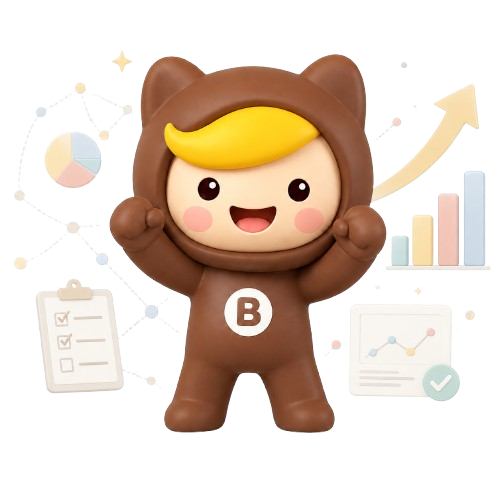
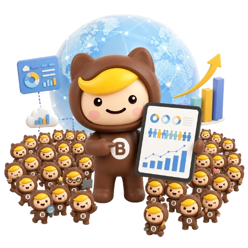
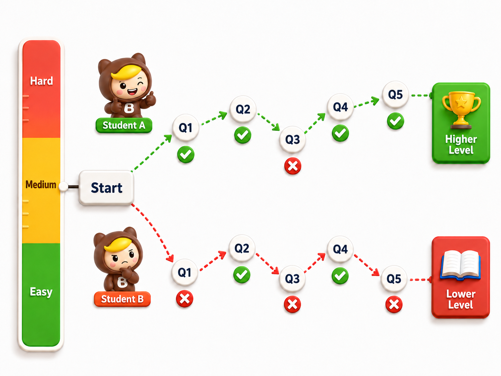
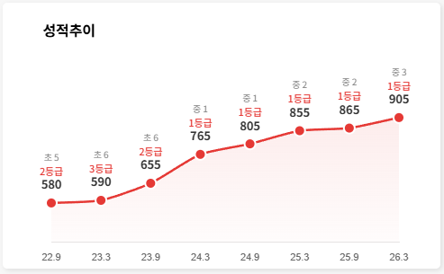
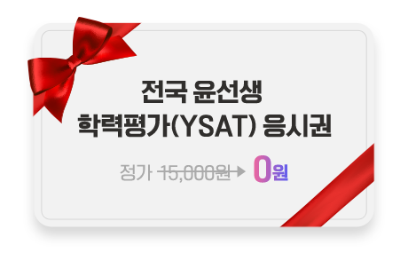

제11회 윤선생 학력평가
점수만 남는 시험 대신
2학기에 진짜 집중해야 할 다음 공부 방향을 확인하세요.
※ 비회원은 학습상담 신청 시 1만 5천원 상당의 무료 응시권을 100% 증정합니다.

윤선생 학력평가(YSAT)란?
Yoon's Scholastic Assessment Test
- ✓전국 단위로 시행되는 빅데이터 기반 온라인 영어 실력 평가
- ✓연 2회 응시 결과를 누적해 6개월 성장 흐름을 객관적으로 분석
- ✓결과 리포트를 바탕으로 선생님 상담과 맞춤 학습 방향까지 연결
평가 개요
※ 응시자의 영역별 기본문항 정답률이 80% 이상일 경우
정확한 실력 측정을 위해 추가문항이 제공됩니다.
일정 안내
개별 링크를 통해 응시
왜 윤선생 학력평가인가요?
정밀한 이정표
우리 아이의 객관적 위치 확인

실시간 난이도 조절
현재 실력을 정밀하게 측정

6개월 성장 추이
우리 아이 영어 성장 흐름을 한눈에 추적

응시료 0원 혜택

공식 인증서 발급
영어에 대한 확실한 자신감 부여
점수만 보는 게 아닌,
다음 공부가 보이는 리포트
전국 동일 학년 대비 위치와 영역별 강·약점을 정밀 분석하고 선생님 상담을 통해 영어 공부의 확실한 우선순위를 제시합니다.
리포트 확인 후 상담으로 학습 방향 설정결과를 받은 뒤,
선생님과 함께
학습 방향을 잡으세요.
학력평가 리포트는 확인에서 끝나지 않습니다.
선생님이 리포트를 바탕으로 아이의 강점, 보완할 영역, 앞으로의 학습 순서를 자세히 상담해 드립니다.
결과 리포트 수령
전국 기준 위치, 영역별 점수, 정오답과 측정목표를 한눈에 확인합니다.
AI 분석 + 선생님 해석
AI 분석 데이터를 선생님이 해석해, 현재 성취도와 보완 우선순위를 상담 핵심 포인트로 정리합니다.
학부모 상담 진행
점수보다 중요한 “왜 이 영역을 먼저 공부해야 하는지”를 구체적으로 안내받습니다.
2학기 맞춤 학습 계획
강점은 유지하고 약점은 보완하는 방향으로 다음 학습 로드맵을 설정합니다.
먼저 경험한 학부모들의
솔직한 후기
접수 전, 궁금한 점을 확인하세요
가장 많이 문의 주시는 내용을 모았습니다.
2학기 영어 공부 전,
실력부터 정확히 확인하세요.
학력평가로 진단하고, 결과 리포트와 선생님 상담으로 우리 아이에게 맞는 학습 방향을 잡아보세요.
※ 윤선생 회원은 무료로 응시 가능하며, 자세한 내용은 해당 센터로 문의해 주세요.
※ 비회원은 학습상담을 신청하시면 무료 응시권을 100% 증정합니다.
- 본 평가는 PC 및 태블릿 환경에 최적화되어 있습니다.
- 저학년 응시자의 경우, 원활한 진행을 위해 보호자와 함께 응시를 권장합니다.
- 평가 리포트는 알림톡으로 링크가 발송되오니 휴대전화 번호를 정확히 입력해 주시기 바랍니다.
- 비회원 응시자의 경우, 리포트 열람 가능 기간은 결과 확인일로부터 6개월입니다.
- 비회원 응시자의 경우, 입력한 휴대폰 번호로 인근 윤선생 센터에서 학습상담 연락을 드릴 수 있습니다.